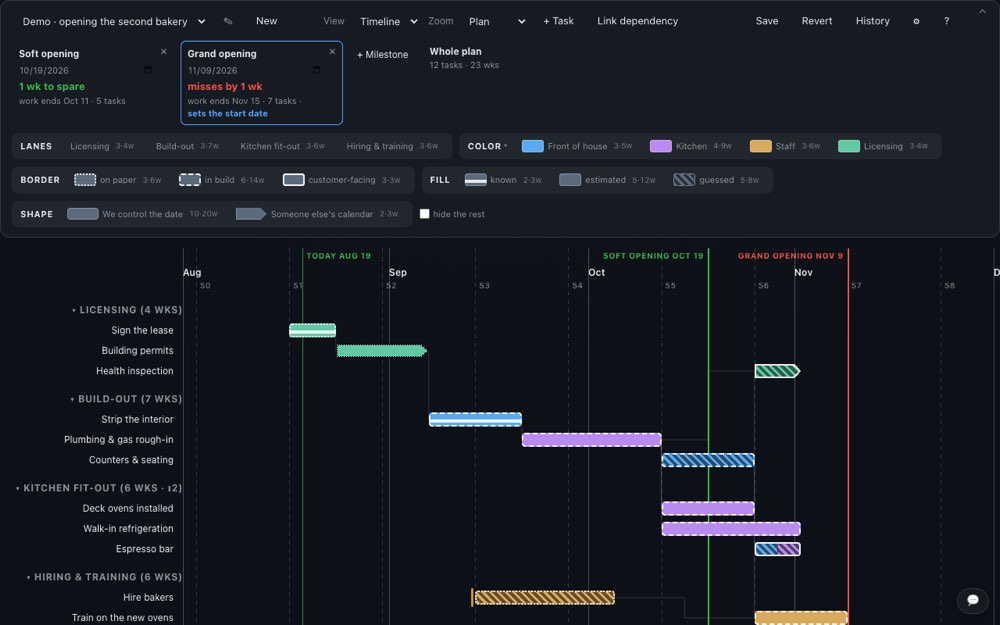
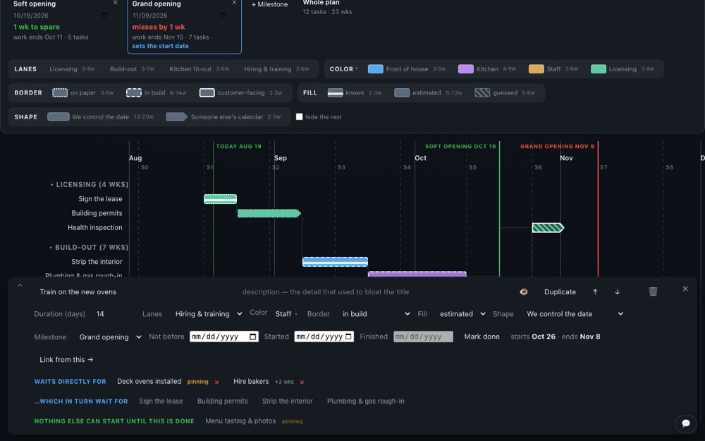
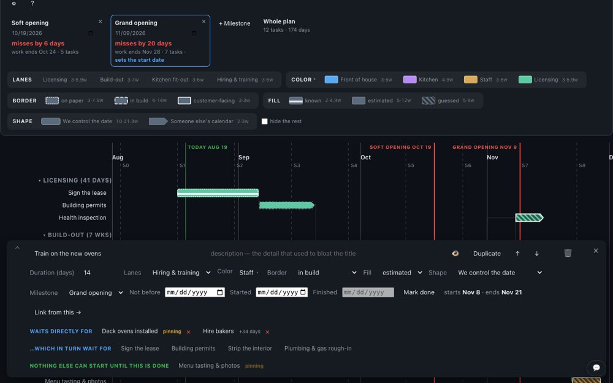
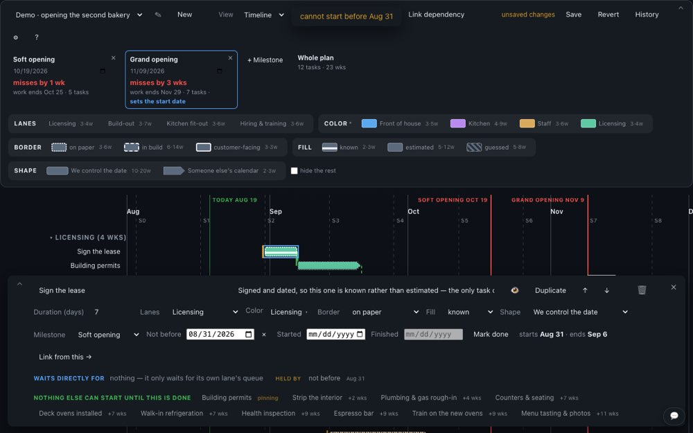
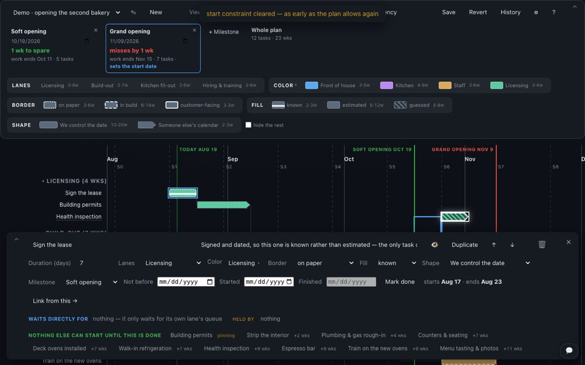
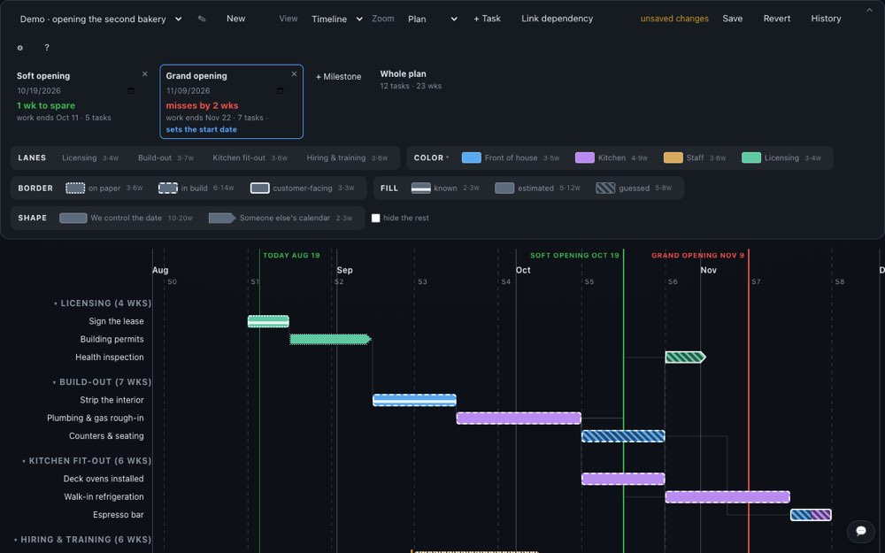

A delivery plan you can argue with in the room. Lanes are queues that can only do so much at once, tasks wait on each other, and the date at the top is computed, never typed — so when someone says "could that start later?", you drag it and everyone watches the answer move.
Nothing you do here is uploaded. Plans live in this browser until you export them — and this page is happy to be closed and forgotten.





